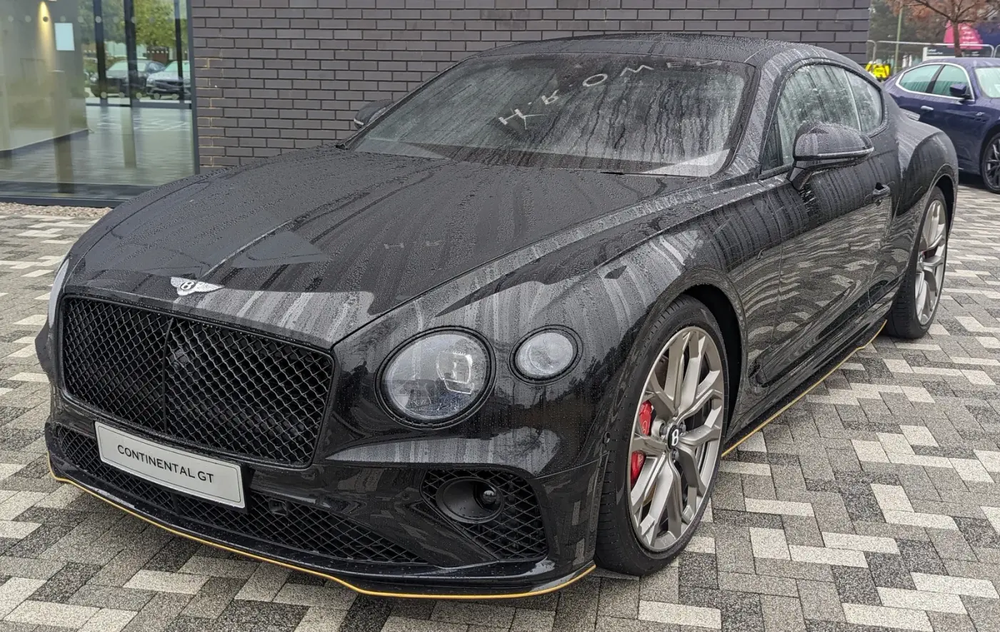
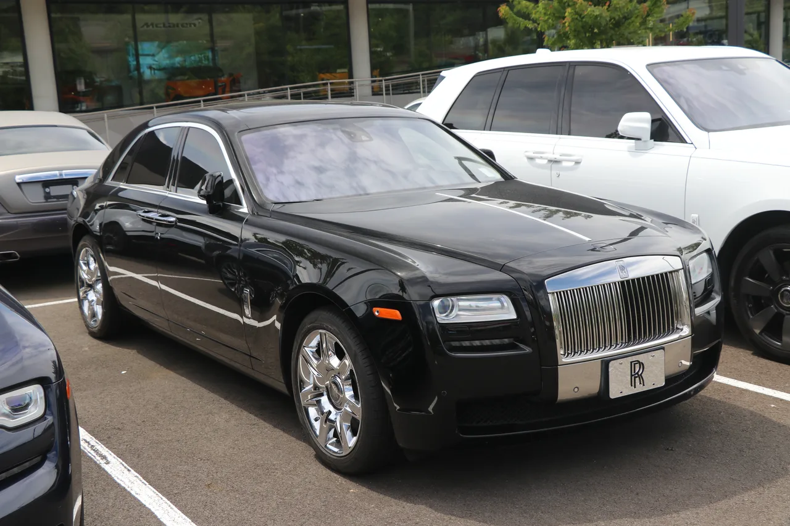
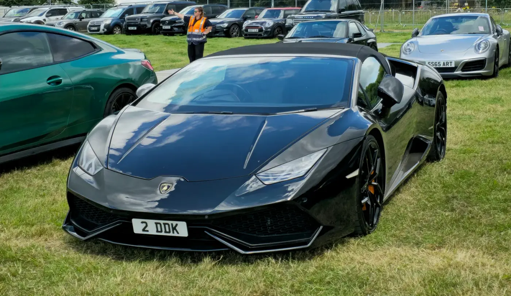
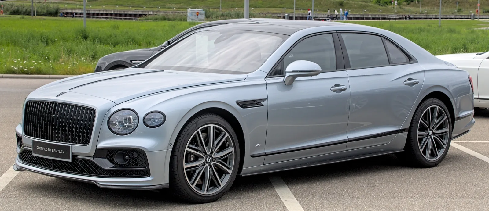
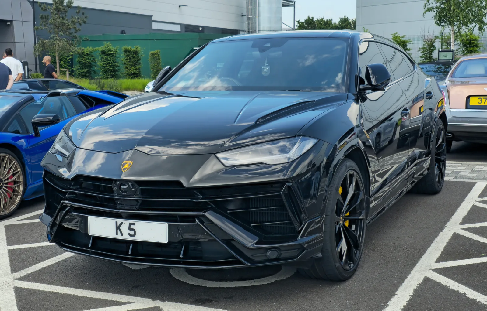
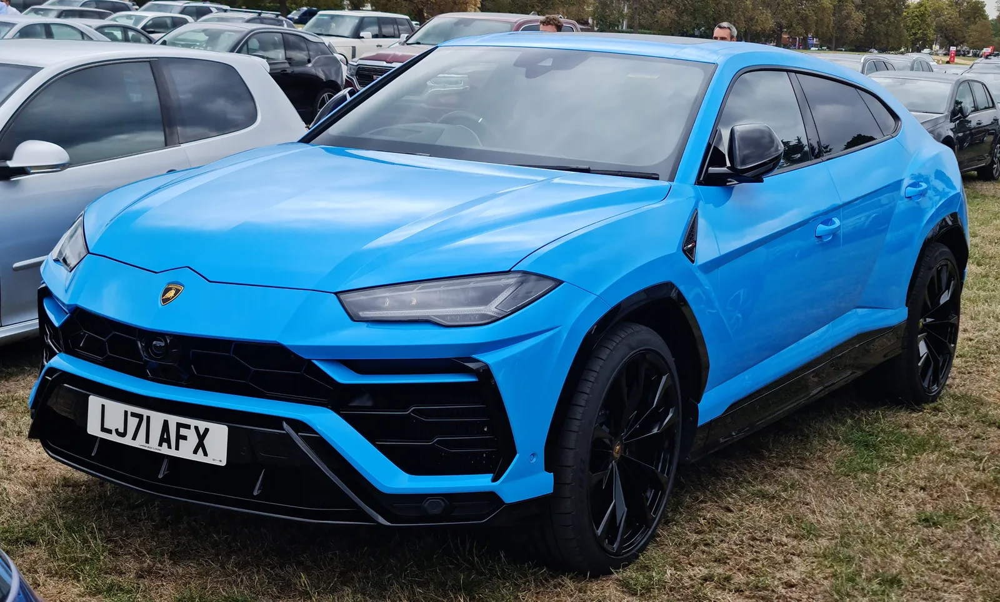

▲ 람보르기니 아벤타도르 LP700-4. 지드래곤이 정규 2집 '니가 뭔데' 뮤직비디오에서 자가 소유 차량으로 공개한 모델과 동일 라인업이다 ⓒ Alexander Migl, Wikimedia Commons (CC BY-SA 4.0)
2020년 8월, Mnet 'TMI NEWS'와 이데일리가 나란히 전한 소식 하나가 화제를 모았다. '가장 비싼 차 타는 아이돌' 1위가 지드래곤이고, 그가 소유한 차량 3대를 합치면 약 16억 원에 달한다는 내용이었다. 이후 여러 매체가 이 차량들을 벤틀리 컨티넨탈 GT(약 3억900만 원)·람보르기니 아벤타도르(약 5억7000만 원)·롤스로이스 고스트(약 7억4000만 원)로 특정해 보도했다. 그런데 이 기사들이 다루지 않은 게 하나 있다. 16억 원짜리 차 3대를 실제로 1년간 굴리려면 얼마가 더 들어가는가 하는 문제다. 자동차 매체 입장에서 진짜 궁금한 건 이쪽이다.
1. '16억 원짜리 3대', 실제로는 어떤 차인가

▲ 벤틀리 컨티넨탈 GT. 지드래곤이 보유한 것으로 알려진 3대 중 상대적으로 가격대가 낮은 모델이다 ⓒ Wikimedia Commons
2020년 8월 26일 방송된 Mnet 'TMI NEWS' 순위를 이데일리가 이튿날인 27일 보도했는데, 지드래곤의 차량은 각각 B사 한정판(약 3억900만 원), L사 스포츠카(약 5억7000만 원), R사 초럭셔리카(약 7억4000만 원)로만 표기됐다. 브랜드명을 직접 밝히지 않은 이유는 알려지지 않았다. 이후 위키트리 등의 후속 보도에서 이 차량들이 각각 벤틀리 컨티넨탈 GT, 람보르기니 아벤타도르, 롤스로이스 고스트로 추정된다고 전했으며, 실제로 지드래곤은 정규 2집 타이틀곡 '니가 뭔데' 뮤직비디오에서 자가 소유 차량이라며 람보르기니 아벤타도르를 공개한 바 있다.
다만 모든 소문이 사실로 확인된 것은 아니다. 2022년 7월에는 지드래곤이 국내 단 1대뿐인 약 44억 원짜리 부가티 시론을 매입했다는 추측이 SNS를 통해 퍼졌지만, 머니투데이 취재 결과 이는 전시장 방문 당시 찍은 사진에서 비롯된 오해였고 지드래곤 측이 매입 사실을 부인했다. 이 기사에서는 보도로 소유가 확인된 3대만 계산 대상으로 삼는다.
| 차량 | 추정 신차가 | 비고 |
|---|---|---|
| 벤틀리 컨티넨탈 GT | 약 3억900만 원 | 영국 럭셔리 그랜드투어러 |
| 람보르기니 아벤타도르 | 약 5억7000만 원 | 뮤직비디오에서 자가 소유 공개 |
| 롤스로이스 고스트 | 약 7억4000만 원 | 3대 중 최고가 |
| 합계 | 약 16억1900만 원 | 이데일리 보도 '16억 원'과 근사 |
2. 1년 차 보험료부터 다르다 — 대당 수백만~수천만 원

▲ 롤스로이스 고스트. 지드래곤이 보유한 것으로 알려진 3대 중 가장 비싼 차량이다 ⓒ Wikimedia Commons
슈퍼카 유지비의 첫 관문은 자동차보험료다. 한국금융신문이 2019년 래퍼 도끼가 보유했던 차량들을 온라인 보험 비교 사이트 '보험다모아'로 계산한 결과, BMW i8은 연 1100만 원대, 롤스로이스 고스트는 연 1000만 원대, 벤츠 G65 AMG는 연 860만 원대, 람보르기니 우라칸 스파이더는 연 800만 원대, 레인지로버는 연 600만 원대가 나왔다(대인배상 최대 1억5000만 원·대물배상 최대 2억 원, 특약 없이 순수 보험료 기준). 지드래곤의 롤스로이스 고스트에 이 수치를 그대로 대입하면 연 1000만 원대가 나온다는 계산이 가능하다.

▲ 람보르기니 우라칸 스파이더. 한국금융신문이 계산한 도끼 보유 차량 보험료 사례에서 연 800만 원대로 나온 모델과 같은 라인업이다 ⓒ Calreyn88, Wikimedia Commons (CC BY-SA 4.0)
더 최근 사례도 있다. 2024년 7월 웹예능 '다까바'에 출연한 팝핀현준은 슈퍼카 6대를 보유하고 있다며 "나이도 많고, 무사고라서 보험료가 싼 편이다. 1년에 1500만원 정도 든다"고 직접 밝혔다(뉴스1 보도). 6대 평균으로도 대당 250만 원 수준이 아니라, 무사고·고령 할인이 최대치로 적용된 결과라는 점이 핵심이다. 반대로 사고 이력이 있거나 젊은 운전자라면 대당 보험료가 이보다 훨씬 뛴다. 실제로 이투데이가 2010년대 국내 5대 손해보험사 자료를 인용한 보도에 따르면, 벤츠 SLR 맥라렌 로드스터의 연 보험료는 2556만 원, 페라리 F430 스파이더는 2022만 원까지 나온 사례가 있다. 노후 경차 보험료(연 10만 원 안팎)와 비교하면 200배 이상 차이 나는 수준이다.
📍 보험료는 '차값'만으로 정해지지 않는다
같은 이투데이 보도에서는 8억 원짜리 마이바흐 62 제플린과 7억3000만 원짜리 롤스로이스 팬텀의 보험료가 887만 원으로, 더 비싼 벤츠 SLR 맥라렌(2556만 원)의 3분의 1 수준에 그친 사례도 확인된다. 스포츠카는 사고 위험이 높다고 인식돼 세단형 럭셔리카보다 보험료 할증이 더 크게 붙기 때문이다. 지드래곤의 람보르기니 아벤타도르(스포츠카)가 같은 가격대의 세단보다 보험료가 더 나올 가능성이 있는 이유다.
3. 사는 순간 사라지는 돈, 감가상각

▲ 중고차 매매단지. 수입차는 국산차보다 감가율이 높은 것으로 조사됐지만, 슈퍼카는 예외적인 흐름을 보이기도 한다 ⓒ CarPrism (AI 생성 이미지)
더팩트가 인용한 소비자단체 컨슈머리서치의 SK엔카 매매 기준 조사에 따르면, 출고 후 3년 된 수입차의 평균 감가율은 44.5%로 국산차(34.8%)보다 약 10%포인트 높다. 특히 대형 세단일수록 감가율이 컸다. 이 일반론을 그대로 적용하면, 지드래곤의 벤틀리 컨티넨탈 GT(3억900만 원)와 롤스로이스 고스트(7억4000만 원)는 3년 뒤 각각 1억7160만 원, 4억1070만 원가량이 증발한다는 계산이 나온다. 연평균으로 환산하면 벤틀리는 연 약 5720만 원, 롤스로이스는 연 약 1억3690만 원이 사라지는 셈이다.
그런데 람보르기니는 사정이 다르다. KB차차차 매물 데이터를 분석한 KB의 생각(2025년 기준) 자료에 따르면, 람보르기니 아벤타도르 S는 3~4년 경과 시점에도 감가율이 22~37% 수준에 그쳤다. 같은 자료에서 람보르기니 우루스·우라칸은 이보다 더 낮은 6~25% 감가율을 보였고, 반대로 맥라렌 570S·650S는 30~71%까지 떨어져 브랜드별 편차가 극심했다. 즉 지드래곤의 아벤타도르는 일반 수입차 평균(44.5%)보다 오히려 방어력이 높은 축에 속할 가능성이 있다. 한정 생산·희소성이 강한 슈퍼카일수록 '중고차 감가'라는 공식에서 벗어난다는 게 KB의 생각이 짚은 요지다.

▲ 맥라렌은 KB차차차 조사에서 570S·650S 기준 3~4년 새 감가율 45~71%를 기록해, 같은 슈퍼카 브랜드 안에서도 감가 방어력 편차가 크다는 점을 보여준 대표 사례로 꼽혔다 ⓒ Wikimedia Commons
| 구분 | 3년 감가율 | 출처 |
|---|---|---|
| 국산차 평균 | 34.8% | 컨슈머리서치·SK엔카 |
| 수입차 평균 | 44.5% | 컨슈머리서치·SK엔카 |
| 람보르기니 아벤타도르 S | 22~37% | KB차차차(2025) |
| 람보르기니 우루스·우라칸 | 6~25% | KB차차차(2025) |
| 맥라렌 570S·650S | 30~71% | KB차차차(2025) |
4. 접촉사고 한 번에 중형차 한 대값 수리비
보험료·감가상각이 '고정비'라면, 정비·수리비는 슈퍼카 오너에게 훨씬 현실적인 공포다. 2026년 8월 19일 보험연구원이 개최한 '고가차량 운행의 외부효과와 최적 과세' 세미나 자료에 따르면, 고가 차량의 평균 수리비는 410만 원으로 일반 차량(130만 원)의 3.2배에 달한다. 이는 사고 1건당 수리비 기준으로, 매년 정기적으로 나가는 비용은 아니지만 슈퍼카를 실제로 운행할수록 부담이 커지는 대목이다. 같은 세미나에서 발제한 손석준 도쿄대 교수는 고가·수입차 한 대가 유발하는 '외부효과'(다른 운전자의 보험료 인상 등 사회적 비용)가 차량가액의 미국 기준 10%, 국내 기준 12% 수준이라고 분석하며 고가차 운전자에게 보험료를 더 물리는 방안을 제시했다. 다만 토론에서는 정비 업계의 '과잉 수리·허위 견적' 관행부터 고쳐야 한다는 반론도 함께 제기됐다.

▲ 벤틀리 플라잉스퍼. 가수 박재범이 2016년 무렵부터 보유해온 차량으로 알려졌다 ⓒ Wikimedia Commons
흥미로운 반례도 있다. 아주경제가 2016년 보도한 바에 따르면 AOMG 대표 박재범은 약 3억 원대 벤틀리 플라잉스퍼를 보유하고 있는데, 이후 여러 매체 인터뷰에서 "차량을 소유한 지난 5년간 직접 운전한 것은 3번뿐"이라며 8년 가까이 이 차를 바꾸지 않고 거의 타지 않는다고 밝힌 사실이 확인된다. 슈퍼카 유지비에서 주행거리가 짧을수록 정비·수리 빈도와 감가 속도 모두 줄어든다는 점을 보여주는 사례다. 비싼 차를 '덜 타는' 것도 결국 유지비를 줄이는 한 방법인 셈이다.
5. 지드래곤만이 아니다 — 우루스는 왜 아이돌 사이에서 인기일까

▲ 람보르기니 우루스. 연예 매체 카미유는 남자 아이돌들 사이에서 최고의 인기를 누리는 차종으로 소개했다 ⓒ Wikimedia Commons
연예 매체 카미유가 보도한 남자 아이돌 슈퍼카 모음 기사에서는 지드래곤의 롤스로이스 팬텀·람보르기니 아벤타도르 외에도, 방탄소년단 뷔가 포르쉐 911 터보 S, 지민이 포르쉐를 보유한 것으로 알려졌다고 전했다. 이 기사는 특정 소유주를 명시하지는 않았지만, 람보르기니 우루스가 남자 아이돌들 사이에서 '최고의 인기'를 누리고 있다고 언급했다.

▲ 포르쉐 911. 카미유 보도에서 방탄소년단 뷔·지민이 각각 포르쉐 911 터보 S와 포르쉐를 보유한 것으로 알려졌다고 전해졌다 ⓒ Wikimedia Commons
우루스는 람보르기니 특유의 슈퍼카 이미지를 유지하면서도 SUV라 뒷좌석 탑승과 짐 적재가 가능해, 슈퍼카치고는 '실사용성'이 좋다는 평이 많다. 이 점이 스케줄 이동이 잦은 아이돌 오너에게는 실질적인 장점으로 작용할 수 있다.
비용 측면에서 봐도 우루스는 앞서 다룬 아벤타도르보다 오히려 '합리적'인 선택지에 가깝다. KB차차차 자료에서 우루스의 3~4년 감가율은 8~25%로 아벤타도르(22~37%)보다도 낮았다. 신차가 자체도 2억~3억 원대로 아벤타도르(5억~6억 원대)의 절반 이하다. '슈퍼카는 타고 싶지만 유지비 부담은 최소화하고 싶다'는 목적에는 우루스 쪽이 데이터상으로도 더 맞아떨어지는 셈이다.

▲ 람보르기니 우루스. KB차차차 자료 기준 3~4년 감가율이 8~25%로, 같은 브랜드의 아벤타도르보다도 낮았다 ⓒ Wikimedia Commons
✅ 이 기사에서 확인한 사실관계
· 지드래곤 슈퍼카 3대 합계 약 16억 원은 2020년 이데일리·Mnet 'TMI NEWS' 보도가 출처
· 차종(벤틀리 컨티넨탈 GT·람보르기니 아벤타도르·롤스로이스 고스트)은 이후 위키트리 등 후속 보도의 추정치이며, 이데일리 원 기사는 브랜드명을 직접 밝히지 않음
· 2022년 불거진 '부가티 시론 매입설'은 머니투데이 취재로 사실이 아닌 것으로 확인돼 이 계산에서 제외
· 보험료·감가율·수리비 수치는 지드래곤 개인이 실제로 지불한 금액이 아니라, 유사 차종에 대해 공개 보도된 사례를 근거로 한 추산치
· 람보르기니 우루스를 소유한 특정 남자 아이돌은 보도에서 확인되지 않음(카미유는 '인기' 언급에 그침)
6. 요약
지드래곤이 '가장 비싼 차 타는 아이돌 1위'(이데일리, 2020)로 꼽히며 화제가 된 슈퍼카 3대, 합계 약 16억 원. 벤틀리 컨티넨탈 GT·람보르기니 아벤타도르·롤스로이스 고스트로 추정되는 이 차량들은 사는 순간 끝이 아니라, 그때부터 보험료·감가상각·수리비라는 세 갈래의 지출이 시작된다.
유사 차종의 공개 사례를 종합하면 대당 연간 보험료는 800만~1500만 원대(무사고 할인 최대 적용 시), 사고 시 평균 수리비는 일반차의 3.2배인 410만 원, 3년 감가율은 롤스로이스·벤틀리급 대형차가 40%대, 람보르기니는 오히려 20%대에 그치는 등 차종별로 큰 차이를 보였다.
같은 맥락에서 람보르기니 우루스는 실사용성과 상대적으로 낮은 감가율 덕에 남자 아이돌들 사이에서 인기를 끌고 있는 것으로 알려졌으며(카미유), 박재범처럼 차를 사놓고 거의 타지 않는 방식으로 유지비를 최소화하는 사례도 확인됐다. '얼마짜리 차를 타는가'만큼 '그 차를 어떻게 굴리는가'가 실제 지출을 가르는 변수라는 뜻이다.